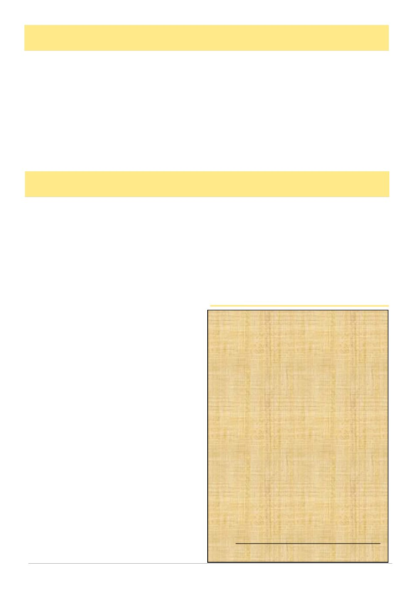

August 2026
7
The VAA Recreational Subcommittee Gets to Work
A new subcommittee, a clear purpose – connecting with
and championing Victoria‟s local and regional bee
clubs.
For as long as the Victorian Apiarists‘ Association
has existed, its strength has come from the beekeeping
communities around the state, typically centred around
the local beekeeping club. The Tuesday-night meeting
in a community hall. The mentor who turns up early to
help a beginner light a smoker properly. The commit-
tee of volunteers quietly keeps an ancient hobby alive
for the next generation. It is this network of clubs and
branches, scattered across every corner of the state, that
gives the VAA its reach and its relevance.
This year, the VAA has formed a new Recreational
Subcommittee. Its mandate: build stronger connections
between the VAA and its affiliated recreational clubs,
listen more closely to what those clubs need, and find
practical ways to support the volunteers who run them.
MEET THE TEAM
Chairing the new subcommittee is Stafford Kelly, of
Lockwood South near Bendigo. Stafford grew up on a
family farm at Inglewood, where beekeeping was simp-
ly part of daily life, before a career in the Australian
Army that spanned senior roles in education, training
and operational planning. Since returning to Bendigo,
he has worked in commercial beekeeping and now
chairs the VAA Bendigo Branch. Stafford brings a
deep, practical understanding of what it takes to keep a
regional club running – and a real passion for educa-
tion, peer inclusion and building resilience across the
industry. The Bendigo Branch is a thriving beekeeping
club with a vibrant program of events, communications,
mentoring and training.
Supporting the subcommittee in his role as VAA
President is Lindsay Callaway, a fifth-generation apia-
rist. Lindsay‘s role on the subcommittee is as the liai-
son with the VAA board. Lindsay is also a member of
the Bendigo Branch and contributes to many of its pro-
grams and events. Lindsay also enjoys travelling to
speak at recreational bee clubs. Although his experi-
ence and expertise is managing one of the largest com-
mercial apiaries in the state, his focus is always on how
to bring communities together and how to share learn-
ing and experiences between commercial and recrea-
tional beekeepers.
Mark Bichan, based at Mount Macedon, grew up
keeping bees with his grandfather. After more than
twenty years across the New Zealand and Australian
Defence Forces, Mark and his family are building
Mount Madecon Honey, seeing him work closely with
recreational beekeepers in mentoring fashion. He
brings a background in government, policy and strate-
(Continued on page 8)
Australian Queen Bee Line
invites expressions of interest for the purchase
of selected commercial extraction equipment
and hives.
Available:
• Cook & Beals 132-Frame Extractor and
Conveyor Unit, with Beequip Deboxer and
Uncapper, plus Cook & Beals Auger and Wax
Reducer
• Kelley 90-Frame Extractor and Conveyor,
with Beequip Uncapper
• 500 ten-frame single hives on pallets
Enquiries and expressions of interest are
welcome for the complete offering
or selected components.
Please Contact:
Charles Casido
Operations Manager
Email: office@australianqueenbeeline.com.au
Phone: 0434 353 301
of Victoria‘s beekeepers continued to be recorded
month after month.
The Editorial Working Group we recently estab-
lished exists because Annette has left us such a strong
foundation to build upon.
On behalf of the board, our members and the broader
Victorian beekeeping community, thank you, Annette.
Your professionalism, dedication and quiet commitment
have left a lasting legacy. You leave both Australian
Bee Journal and Victorian Apiarists' Association
stronger than when you found them.
Finally, whether you manage thousands of hives
across Victoria or care for a single hive in your back-
yard, we are all custodians of the same industry. VAA
will continue working every day to advocate for bee-
keepers, strengthen your VAA and protect the future of
beekeeping in Victoria. Thank you for your continued
support, and I look forward to catching up with many of
you over the coming months.
One Voice. One Home. One Guardian. Together,
we are building a stronger future for Victoria‘s bee-
keeping.
Lindsay Callaway
President
Victorian Apiarists' Association
(Continued from page 6)
President’s Report, cont’d
Growing Together